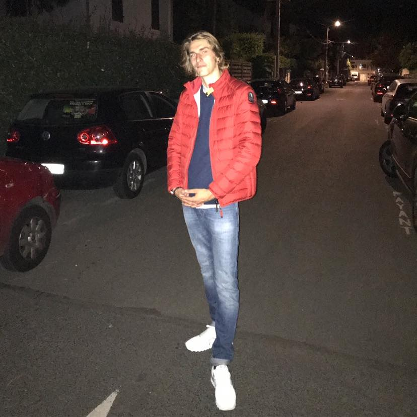

BONJOUR, JE SUIS LÉONARD

Je m’appelle Léonard Lefèvre, j’ai 22 ans, j’habite à la baule dans le 44.
Me connaître un peu plus
Sports nautiques
J’aime faire du sport surtout nautique tel que le surf et le wakeboard.
Sports
J’aime également le tennis et le football car je pratique ces sports depuis très jeune
Autres
J’aime également les jeux vidéo et la cuisine.
Ma scolarité
Je suis à kedge business school depuis 4 ans
J’étais en bachelor et j’ai enchainé sur le PGE de Kedge
Je suis donc actuellement en Master 1 spécialité Finance
Mes expériences
J’ai eu l’occasion pendant mes années de Bachelor de faire des stages à l’étranger plus précisément à Dubai dans le domaine du trading business to business (commerce de gros)
C’était une expérience très enrichissante d’un point de vue personnel dans le dépassement de soi sur le départ à l’étranger seul, ainsi découvrir une nouvelle culture et les conditions de travail à l’étranger.
J’ai également fais un stage en France à paris chez DNCA Finance pour finir mon Bachelor dans une société de gestion d’actif et de portefeuille et plus précisément en gestion privée.
Ce stage m’a éclairci pour le choix de mes études actuelles mais également pour ma vie future car je me vois bien travailler dans ce genre de société. (NATIXIS)
C’était pour moi la meilleure expériences professionnelles car elle m’a permis d’ouvrir les yeux sur ce que j’aimais vraiment et sur mon orientation professionnelles après mes études.